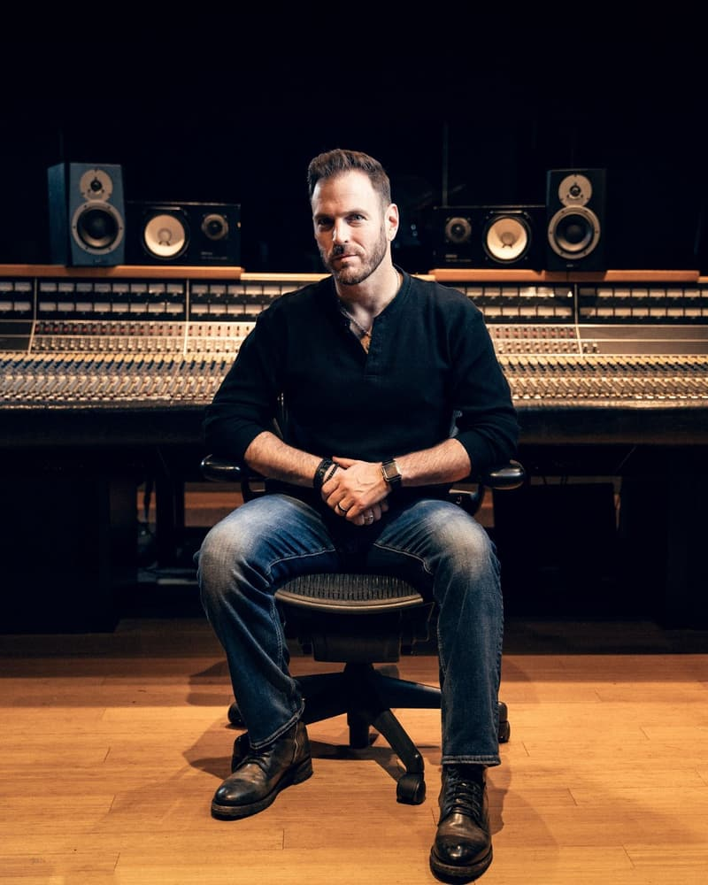

Country record producer · Nashville
Your songs.
Your vision.
Send me a voice memo. Real Nashville musicians play your song, and I produce, mix and master it into a finished record.
9 #1s13 client awards180+ five-star reviewsRecording Academy voting member

Why songwriters work with Daniel
01
Your visionExactly as you hear it, or fresh ideas. You decide how much I shape it.
02
Real playersNo AI-generated music. Every note played by real Nashville musicians.
03
From anywhereMost of my songwriters work from home and watch their song being played on video.